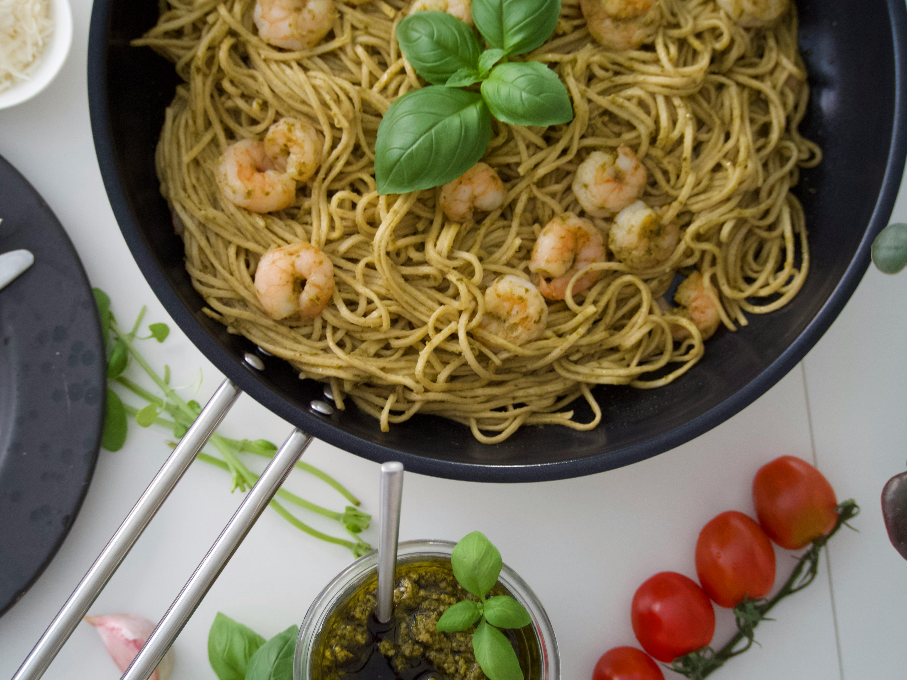

Chreamy Pesto Shrimp

Photo by Pexels
An easy shrimp pasta recipe by Loretta Buffa on allrecipes.com.
Expect creamy pesto sauce and silky noodles with shrimp!
Prep time of 15 mins and cook time of 15 mins as well!
Made for 8 servings.
Ingrediants
- 1 pound linguine pasta
- 1/2 cup butter
- 2 cups heavy cream
- 1/2 teaspoon ground black pepper
- 1 cup grated Parmesan cheese
- 1/3 cup pesto
- 1 pound large shrimp, peeled and deveined
Steps
- Gather ingrediants together.
- Fill a large pot with lightly salted water and bring to a rolling boil. Stir in linguine and return to a boil. Cook pasta uncovered, stirring occasionally, until tender yet firm to the bite, about 8 to 10 minutes; drain.
- Meanwhile, melt butter in a large skillet over medium heat. Stir in cream and season with pepper; cook, stirring constantly, for 6 to 8 minutes.
- Stir Parmesan cheese into cream sauce until thoroughly mixed. Stir in pesto and cook until thickened, 3 to 5 minutes.
- Stir in shrimp and cook until they turn pink, about 5 minutes. Serve sauce over hot linguine.
- Serve hot and enjoy!
Home